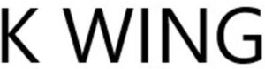

Trade Mark Journal No.2025/032 8 August 2025
WO0000001866486 (28,41)
Office of origin: France
Date of International Registration:26 May 2025
Date of designation in the UK:
26 May 2025

International priority date claimed: 3 January 2025
(France)
(5109751)
- Class 28
- Kitesurf wings; hang gliders; traction wings; power kites; parafoil-type kites; wings for kitesurfs; ropes and lines for power kites; kite surfs; surfboard fins; fins for surfboards and sailboards; surfboards; kiteboards; sails and boards for windsurfing; kitesurfs; hydrofoil boards [kitesurfs]; sail hydrofoil boards [kitesurfs]; boards for surfing; booms for sailboards; harness for sailboards; masts for sailboards; windsurfing gloves; traction pads for surfboards and sailboards; surfboard leashes; sailboard foot straps; leashes for sailboards; kites; kite handles; bags and covers specially designed for surfboards; protective padding (parts of sportswear); scale model boats; models [toys]; figurines [toys]; flotation devices in the form of boards for leisure; bags specifically adapted for sports equipment.
- Class 41
- Organization of surfing, kitesurfing and windsurfing races; organization and conducting of boat racing events; training in the use and operation of marine transport and navigation equipment and apparatus; teaching and courses regarding surfing, kite surfing, windsurfing; rental of surfing equipment; rental of kites; organizing, preparing and conducting boat races; ticket agency services for racing events and marine competitions; racing information services provided via the Internet; entertainment in the form of exhibitions and races in the maritime field; entertainment services in the form of sailing vehicle races; sports race organization, coordination and hosting services; education; training; entertainment; sporting and cultural activities; provision of information with respect to leisure, sports and entertainment; provision of information with respect to education; provision of recreational facilities; publication of books; book lending; provision of non-downloadable films via video-on-demand services; motion picture production; photography services; organization of competitions (education or entertainment); organization and conducting of colloquiums, conferences, conventions; organization of exhibitions for cultural or educational purposes; booking of seats for shows; game services provided online from a computer network; gambling services; electronic publication of books and journals online.
F.ONE
Representative: Monsieur RHEIN Alain CABINET BREV&SUD, 55 AV CLEMENT ADER, F-34170 CASTELNAU LE LEZ, FRANCE